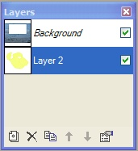

Layers Window
|  The Layer Window allows the user to manage the multiple layers that a graphics project may contain. For instance, in the image to the left, the active window is "Layer 2". Therefore, all tools and filters will alter that layer and only that layer. All the other layers will remain constant. The checkbox on the right hand of the layer, when checked, determines if the layer will be rendered onto the final image which is displayed on the screen. To hide the layer uncheck the box. Note: Even though a layer is unchecked, it can still be altered with tools and filters. Be cautious when working with an unchecked layer. Finally, the white box next to the titles of the layers is a preview box of that layer. Any image contained in the layer will be visible in this box.To quickly add a new layer to the current image, click the first button at the bottom left of the window. The X button removes the current selected layer. The button next to it with the double papers duplicates the currently active layer. The Up and Down arrows move the location of the layer in the list. Finally, the last icon allows the user to change the Layer Properties of the active layer. This window is closeable and moveable. If it is not currently on the screen, you can display it using the menu bar option Window and clicking Layers. You can also use this combination to hide the Layer Window. The Adding New Layer action may also be performed using the menu bar under Layers and clicking Add New Layer.
|